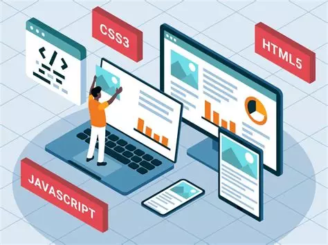
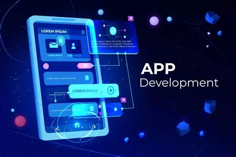

Administrer les réseaux et Internet
Compétences liées à la configuration, sécurité, supervision et gestion des réseaux informatiques.
Connecter les entreprises et les usagers
Installation, mise en service et administration d’équipements de transmission, ToIP, accès sécurisés.
Créer des outils et applications informatiques
Développement d’applications, automatisation, client/serveur, sécurité et gestion de projet.


Ce portfolio représente mon parcours, mes progrès et ma passion pour les réseaux et le développement. J'espère qu'il vous convaincra de mon engagement et de mon professionnalisme.